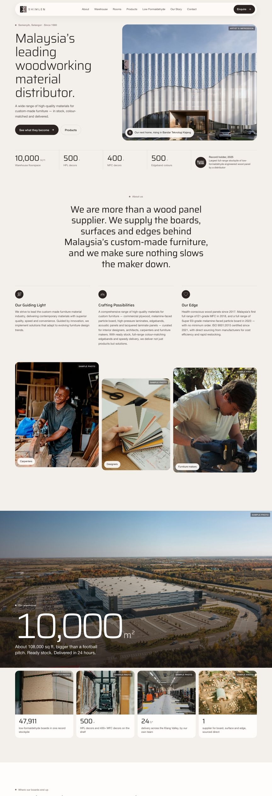

01
Daylight
Light and story-first


Revamp 1 New
Daylight
First called “Open”
Light, calm and story-first, like being shown round by someone who knows the place.
- The logo draws itself in, then the new building turns from dawn to dusk beside the words.
- An aerial photo opens to full width for 10,000 m², about 108,000 sq ft.
- Each room rises over the last as you read; Board, Surface and Edge open as tall panels.